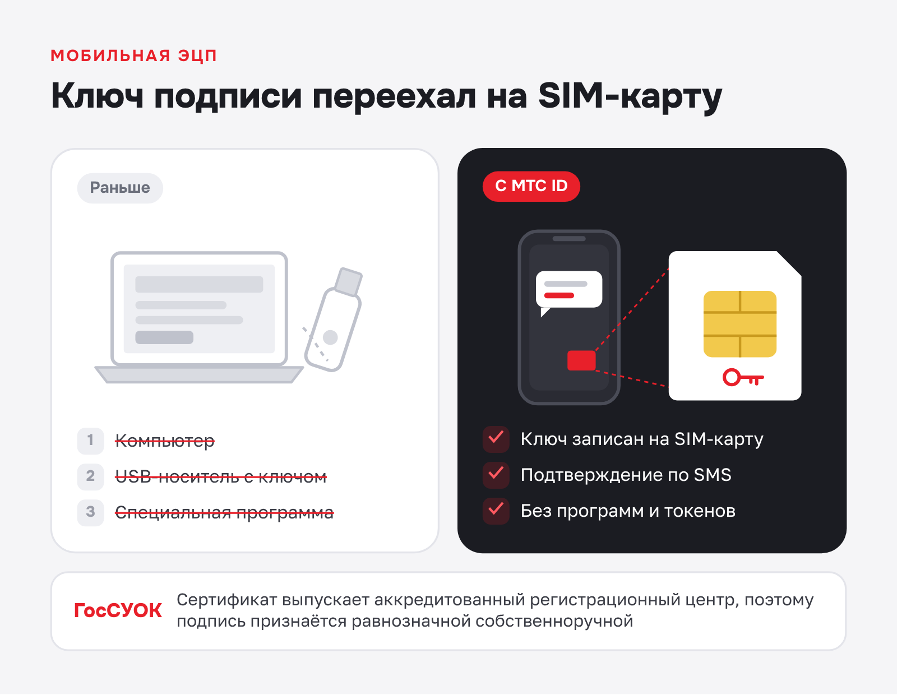
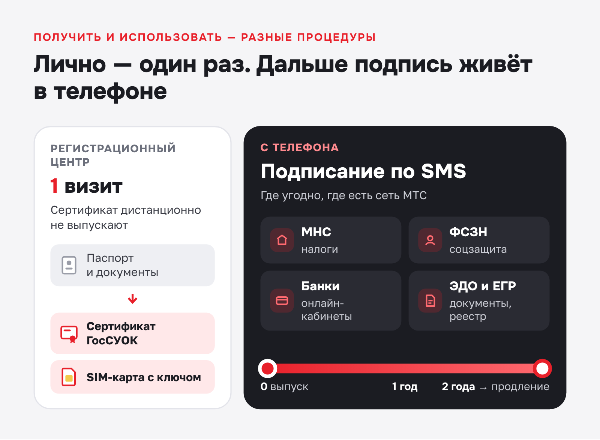
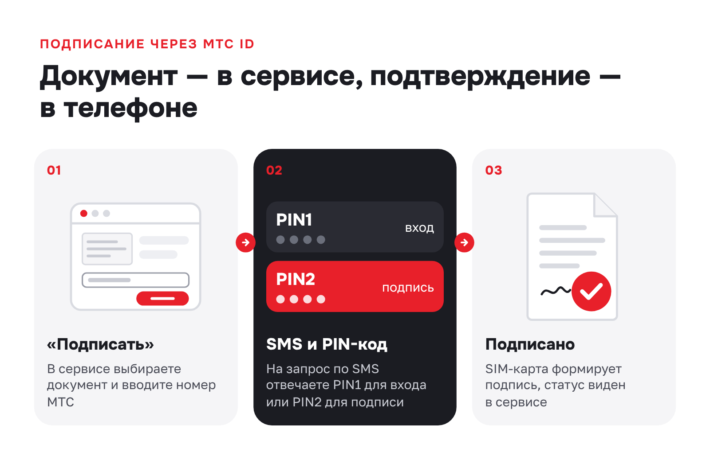

МТС Беларусь · Инфостатья · телеком
Статья МТС Беларусь о мобильной электронной подписи МТС ID
МТС Беларусьmts.by
МТС Беларусь (СООО «Мобильные ТелеСистемы») работает с 2002 года и остаётся крупнейшим оператором страны по числу абонентов: 5,7 млн человек. По итогам 2025 года занял первое место по качеству мобильной связи в измерениях БелГИЭ.
- Площадка
- Сайт mts.by
- Формат
- Информационная SEO-статья по ТЗ
- Год
- 2026
Задача заказчика — привлечь покупателей из поиска в интернет-магазин и объяснить абонентам, как пользоваться цифровыми сервисами. В 2026 году написала продающие тексты для каталога shop.mts.by и информационные статьи для сайта mts.by.
Задача
Объяснить, как подключить и использовать мобильную электронную подпись.
Решение
Построила статью как пошаговую инструкцию, сложные юридические понятия объяснила простым языком.
Результат
Статья принята без правок и размещена на сайте mts.by.
Электронная подпись на телефоне: как работает мобильная ЭЦП МТС ID
Раньше для подписания электронных документов нужны были компьютер, USB-носитель и специальная программа. Теперь достаточно обычного мобильного телефона: сервис МТС ID переносит электронную цифровую подпись на SIM-карту абонента. Подписание и подтверждение личности проходят по SMS, а подпись в Беларуси имеет ту же юридическую силу, что и собственноручная.
Что такое МТС ID и где хранится электронная подпись
МТС ID — сервис оператора СООО «Мобильные ТелеСистемы», с которым документы можно подписывать прямо с телефона. Криптографический ключ записывается на SIM-карту — защищённый аппаратный носитель, который выполняет ту же роль, что и USB-токен. Оператор аккредитован как регистрационный центр ГосСУОК, поэтому выпущенные сертификаты признаются государством.

Компьютер, флеш-носитель и дополнительные программы для работы не нужны. Данные передаются по защищённым каналам оператора, а каждое действие подтверждается по SMS.
Где можно использовать мобильную ЭЦП
SIM-карту с ключом ЭЦП принимают десятки площадок — от налоговых порталов до банковских кабинетов. Основные направления:
- налоги — личный кабинет плательщика МНС, приложение MNS Mobile;
- соцзащита — портал и мобильное приложение ФСЗН;
- электронный документооборот — ЭДиН, QuiDox, podpis.by, DIRECTUM Bel;
- банки — системы дистанционного обслуживания Банка Дабрабыт, Сбер Банка, Белинвестбанка, Технобанка;
- реестр юрлиц и ИП — веб-портал ЕГР;
- идентификация и почта — межбанковская система идентификации и национальная почтовая электронная система;
- EDI-обмен накладными — площадка CTT.by.
Список совместимых сервисов пополняется, актуальный перечень можно найти на странице МТС ID на сайте оператора.
Можно ли получить ЭЦП через телефон
Частый вопрос — можно ли получить ЭЦП через телефон, не выходя из дома. Подписывать документы с мобильного можно, а вот впервые оформить сертификат дистанционно не получится: для выпуска нужно лично обратиться в регистрационный центр ГосСУОК.

Важно разделять две процедуры. Получение сертификата — это разовая операция в регистрационном центре. А пользоваться подписью вы будете постоянно, и для этого нужен только телефон: после визита документы можно подписывать где угодно.
Как сделать электронную подпись на телефоне: порядок подключения
Сначала ознакомьтесь с условиями публичного договора НЦЭУ. Затем выберите срок действия сертификата и оплатите его — через ЕРИП или по счёт-фактуре.
Следующий шаг — документы. Пакет зависит от того, кто оформляет подпись: физическому лицу хватит минимального набора, организации понадобятся дополнительные бумаги.
| Кто оформляет | Какие документы нужны |
|---|---|
| Физическое лицо | Паспорт и заявление |
| Организация | Паспорт, заявление, свидетельство о госрегистрации, доверенность на представителя; для отчётности в ФСЗН — извещение о постановке на учёт |
С готовым пакетом документов обращайтесь в регистрационный центр МТС. Там же выдадут новую SIM-карту с записанным ключом: сертификат и SIM-карта оформляются за одно обращение. Поэтому вопрос, как создать ЭЦП через телефон, решается за один визит.
Как происходит подписание документов через МТС ID
Сам документ подписывается не в телефоне, а в интерфейсе нужного сервиса — например, в личном кабинете МНС. Телефон получает запрос и подтверждает действие, а подпись формирует криптографический модуль SIM-карты.

Для пользователя весь процесс укладывается в три шага:
- Выбор документа. В интерфейсе сервиса нажмите «Подписать» и введите свой номер МТС.
- Ответ на SMS-запрос. На телефон придёт сообщение с просьбой подтвердить действие. Для авторизации введите PIN1, для подписи — PIN2.
- Результат. SIM-карта формирует подпись, документ приобретает юридическую силу, а статус отображается в сервисе.
PIN1 нужен для входа и идентификации, PIN2 — для подписания документов. Никому не сообщайте эти коды, даже коллегам.
Ограничения и условия оказания услуги
Перед подключением учтите несколько условий:
- услуга «МТС ID» подключается до записи сертификата на SIM-карту — без неё выпуск невозможен;
- сертификат действует два года, затем его нужно продлить;
- при отказе от услуги сначала отзывают сертификат;
- абонентам, перешедшим в МТС из другой сети с сохранением номера (MNP), выпуск пока недоступен — нужен «родной» номер МТС.
Эти условия стоит проверить заранее, особенно если номер переносили от другого оператора.
Можно ли открыть ЭЦП с телефона и подписывать документы
Да, именно для этого и создан МТС ID. Телефон заменяет USB-токен: вы открываете нужный портал в браузере, запрашиваете подпись и подтверждаете её PIN-кодом в ответ на SMS.
Если вы ищете, как сделать ЭЦП на телефоне без лишних сложностей, проще формата не найти: оформив сертификат один раз, вы подписываете документы хоть из офиса, хоть из командировки. Чтобы получить электронную цифровую подпись, соберите документы и обратитесь в регистрационный центр МТС.
Заключение
С мобильной ЭЦП через МТС ID документы подписываются с телефона — без токенов, кабелей и лишних программ. Ключ записан на SIM-карту, а за юридическую силу подписи отвечает инфраструктура ГосСУОК. Достаточно один раз прийти в регистрационный центр, а дальше подписывать документы по SMS везде, где есть сеть МТС.